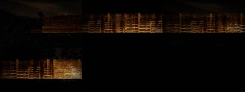
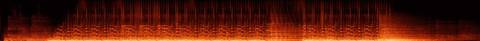

Afterlight / V Mosaic / AFL-21
V · Mosaic · AFL-21 of 22 · 1:39
Copper Glow
The note that produced it
On this track: “Carry the glow”, “light-years to go”, “golden record”, and the opening lines; the only song with words.
“I want each to be a mosaic assemblage of the tracks, never the whole track. Each a separate video experiment to see the samples, get the groove. Aim for 1–2 minutes per track.”
“A different attempt and technology for each Afterlight song / music video experiment”: readable as embers from their spectrograms, as Gaussian splats of places.
What was made
The sung lines’ own spectrum as a ribbon of light; its strongest partials break off as embers into the wind, with porch lights and windows from the archive behind.
Light-years in a second-hand song 0:00 · carry the glow 0:46 in sixteenths · the room goes gold 1:07 · golden record 2:17
What came back
The note on this version, which produced AFL-22 One Note:
“The mix of all of them … is crowded and the video is too dark.” Think like the One-Note Soul Prism genome: one radiant strike refracted by pitch over raw boom-bap; and like a sunset set by the sea, embers rising into stars, sun glitter, caustic nets of light.
Images made while working: contact sheets, check frames, spectrograms, the stills compared before and after a fix. Tap one to see it full size.





No separate critic agent was run on this cut. The critique came from the director, in the notes on either side of it.
On the cut before
“Carry the glow”, “light-years to go”, “golden record”, and the opening lines; the only song with words.
On this cut
“The mix of all of them … is crowded and the video is too dark.” Think like the One-Note Soul Prism genome: one radiant strike refracted by pitch over raw boom-bap; and like a sunset set by the sea, embers rising into stars, sun glitter, caustic nets of light.
Sample map
Every sound placed in the 1:39 study, 68 events by layer, coloured by the track it was cut from. The bars under the map are the whole source tracks; the lit spans are the parts actually used (approximate: stretched and frozen samples are counted by where they start).
The recipe
The function that composed this study, exactly as it ran.
def copper():
"""the only voice: 'light-years in a second-hand song', 'carry the glow', 'the room goes gold', 'golden record', chopped over the song's own groove"""
n = 'copper'; P = 3.75; m = Mix(100)
V1 = cut(n, 0.0, 7.5) # Light-years in a second-hand song / Light-years and I'm still holding on
V2 = cut(n, 46.0, 60.0) # Oh-oh-oh carry the glow / light-years to go
V3 = cut(n, 67.0, 81.0) # Neighbors ... room goes gold
GR = cut(n, 137.0, 139.4) # golden record
# opening: the first line slowed and lowered, alone, in a long room
low = resample(V1, 0.8)
m.put('vox', low, 0.5, 0.8, n, 0.0, 'lightyears-slow'); m.put('ember', ember(low, 10, 0.6), 0.5, 1, n, 0, 'tail')
t = 0.5 + len(low) / SR
G = snap(n, 85.0); PG = period(n, G, 128.0, 8)
m.put('loop', sweep(loop(n, G, PG, 2), 300, 15000), t, 1.0, n, G, 'groove'); place_kicks(m, n, G, PG, t, 2); t += 2 * PG
m.put('vox', V1, t, 1.0, n, 0.0, 'lightyears'); m.put('loop', loop(n, G, PG, 2), t, 1.0, n, G, 'groove'); place_kicks(m, n, G, PG, t, 2); t += 2 * PG
# stutter: 'carry the glow' cut into sixteenths over the groove
m.put('loop', loop(n, G, PG, 4), t, 1.0, n, G, 'groove'); place_kicks(m, n, G, PG, t, 4)
cg = steps(n, 46.0, PG, 16)
play_pattern(m, 'chop', cg, [0, 1, 0, 1, 4, 5, 4, 5, 8, 9, 10, 11, 8, 8, 8, 8], t, PG / 16, 0.9, n, 46.0, PG, reps=2)
m.put('vox', V2[:int(2 * PG * SR)], t + 2 * PG, 1.0, n, 46.0, 'carrytheglow'); t += 4 * PG
m.put('loop', loop(n, G, PG, 4), t, 1.0, n, G, 'groove'); place_kicks(m, n, G, PG, t, 4)
m.put('vox', V3, t, 1.0, n, 67.0, 'roomgoesgold'); t += 4 * PG
# break: the groove leaves; 'golden record' echoes into the dark
m.put('echo', echo(GR, PG / 4, 0.62, 10, 0.85), t, 0.9, n, 137.0, 'goldenrecord')
m.put('bed', freeze(cut(n, 60, 66), 8), t, 0.5, n, 60, 'freeze'); t += 2 * PG
m.put('loop', loop(n, G, PG, 4), t, 1.0, n, G, 'groove'); place_kicks(m, n, G, PG, t, 4)
m.put('vox', V2[int(2 * PG * SR):], t, 1.0, n, 46.0 + 2 * PG, 'lightyearstogo')
play_pattern(m, 'chop', steps(n, 0.0, PG, 16), [0, None, 0, None, 2, 2, None, 3, 0, None, 0, 1, 2, 3, None, None], t + 2 * PG, PG / 16, 0.6, n, 0.0, PG, reps=2)
t += 4 * PG
m.put('loop', tapestop(loop(n, G, PG, 1), 1.4), t, 1.0, n, G, 'tapestop')
m.put('vox', resample(V2[-int(3 * SR):], 0.85), t + 0.4, 0.8, n, 57.0, 'outro')
m.put('ember', ember(V2[-int(3 * SR):], 20, 0.9), t + 0.4, 1, n, 57.0, 'tail')
m.duck(['loop', 'bed'], 0.5, release=0.22)
return mThe picture technique
class VoiceEmbers:
"""the sung lines as a glowing ribbon of their own spectrum crossing the frame; the strongest partials break off as embers into wind,
and the archive's porch lights and windows show faintly through the glow"""
def __init__(s, ctx, cats=('lam', 'nig', 'han', 'chi'), seed=9):
s.c = ctx; s.clips = [clip_frames(i, 320, 240, 12, 10) for i in footage(cats, 6, seed)]; s.emb = Embers(40000, 11)
s.vox = [e for e in ctx.events if e['layer'] in ('vox', 'chop')]
def frame(s, t, dt):
c = s.c; img = np.zeros((H, W, 3), np.float32)
cl = s.clips[int(t / 8) % len(s.clips)]; f = up(cl[int(t * 12) % len(cl)].astype(np.float32))
L = f.mean(2); img += (np.clip(L - 0.5, 0, 1) ** 1.5)[..., None] * np.array([1.0, 0.7, 0.4]) * 0.3
vox = c.e('vox', t) + c.e('chop', t) * 0.7
# the ribbon: last 5 s of the spectrum, right to left; vocal band only
cols = int(5 * c.melfps); i1 = int(t * c.melfps); i0 = max(0, i1 - cols)
band = c.mel[18:90, i0:i1]
if band.shape[1] > 2:
rib = cv2.resize(band[::-1], (int(W * band.shape[1] / cols), 300), interpolation=cv2.INTER_LINEAR)
canvas = np.zeros((300, W), np.float32); canvas[:, W - rib.shape[1]:] = rib
age = np.linspace(1, 0, W)[None] # left is older
v = canvas ** 2 * 2.2 * (0.3 + 0.7 * (1 - age)) * (0.5 + 1.0 * min(1, vox * 1.5))
img[210:510] += v[..., None] * thermal(0.3 + 0.65 * canvas)
# the newest column's peaks leave as embers
col = band[:, -1]; pk = np.nonzero((col > 0.58) & (np.r_[0, np.diff(col)] > 0) & (np.r_[np.diff(col), 0] < 0))[0]
if len(pk):
ys = 210 + (1 - pk / band.shape[0]) * 300; n = len(pk) * 6
s.emb.emit(np.full(n, W - 30, np.float32) + np.random.default_rng(int(t * 99)).normal(0, 10, n), np.repeat(ys, 6).astype(np.float32), vx=-180, vy=-30, T=1.0, life=3.5, spread=25)
kk = c.kick(t, 0.2)
s.emb.step(t, dt, wind=(-160, -25), gust=kk * 0.8, buoy=-30); img += s.emb.draw(t, 1.0, 0.07)
for e in c.events:
if e['tag'] == 'goldenrecord' and 0 <= t - e['t'] < 2.5:
a = t - e['t']; img += (np.exp(-((np.sqrt((XX - W / 2) ** 2 + (YY - H / 2) ** 2) - (60 + a * 260)) / 4) ** 2) * (1 - a / 2.5))[..., None] * GOLD
return img + gaussian_filter(img, (6, 6, 0)) * 0.35Files
The scripts that made this version, as plain text.
- compose.py254 linesthe nine mosaics: every cut, loop and freeze
- sampler.py154 linesloop, stretch, reverb, echo, freeze, tape stop
- mix.py85 linesthe 178-second set
- sound_design.py91 linesneedle drop, inhales, risers, sub, tape bus
- engines.py367 linesthe ten picture techniques
- vis_common.py106 linesshared embers, archive frames, the finish
- render.py41 linesrenders frames and encodes
- analyze.py21 linestempo and onsets of each source track
A film concept by Sosuke & Watson · CRASH LAB · PAELEO · CINEOSIS LAB